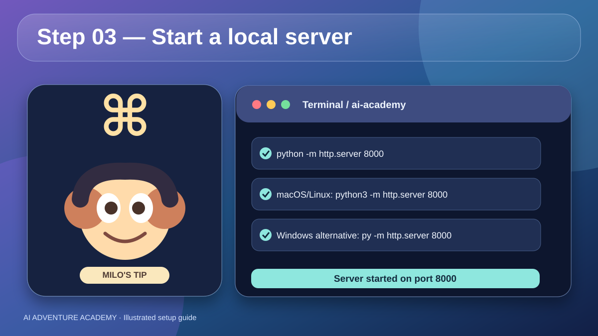
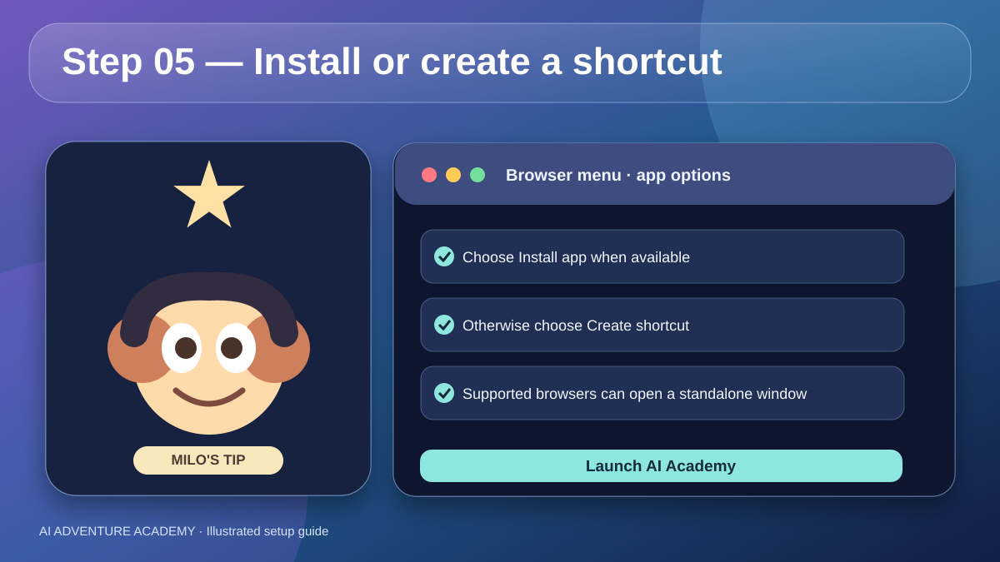

Step 1 · Download the repository
Open the ai-academy repository and download the ZIP file, or clone it with Git.
A hands-on, 12-week adventure explaining what AI really is, creative tools, daily productivity, nine useful agent prototypes, vibe coding, and publishing your first website. Learn at your own level, with clear examples and fun challenges.
Age guidelines are flexible. The kids track needs adult supervision. You can start simple and level up at any time.
Starts Monday, 30 November 2026 · All times India Standard Time (IST) · Self-guided lessons, not live classes.
The message is split into pieces. Tokens are converted to numerical representations.
Learned weights and parameters transform numerical signals. GPUs help accelerate large computations.
The model estimates likely continuations one token at a time; its output is not necessarily true.
Some assistants can search, calculate or call tools. Check the actual source and date before trusting an answer.
Start with safe copyable prompts and fictional data. An agent becomes automated only when you configure a trigger, tools, approvals and reliability checks.
Official links. Availability, pricing and minimum ages vary by product and region.
The academy is a static web application, so you can run it locally on Windows, macOS or Linux without a database. Follow the five illustrated steps below.
Open the ai-academy repository and download the ZIP file, or clone it with Git.
Unzip the downloaded file and open the extracted project folder.

From the project folder run python -m http.server 8000 or npx serve ..
Visit http://localhost:8000 and the academy will load locally.

Use your browser's Install app or Create shortcut option to launch it as a standalone desktop-style application.
Vibe-code a small website, test it on mobile, keyboard and real browsers, publish it via GitHub Pages and share your learning story.
Progress is saved locally in this browser. No accounts or analytics. Never put API keys or private information in a public GitHub Pages site.